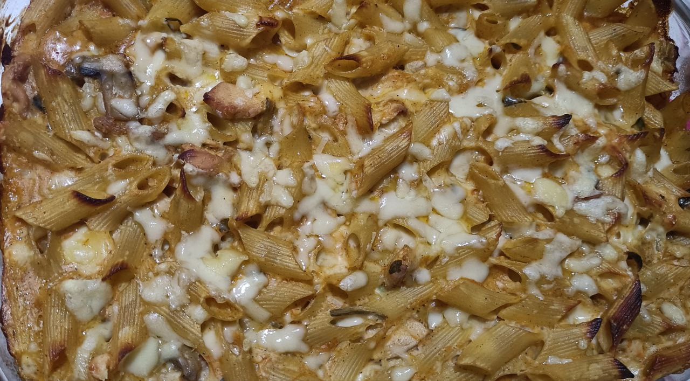

Bechamel Penne

This dish features a delightful combination of tender penne pasta enveloped in a rich and creamy bechamel sauce. The bechamel, infused with fragrant herbs and spices, is further enriched with grated cheese, creating a luxurious coating for the vegetables. Chopped celery, mushrooms, and onions add savory depth and a pop of texture, while a final sprinkle of cheese before baking ensures a beautiful golden finish.
Ingredients
Pasta
2 cups Penne Pasta
Bechamel sauce
2 tablespoons Butter
2 tablespoons All-Purpose Flour
2 cups Milk
½ teaspoon Black Pepper
Herbs & Spices
Pinch of Paprika
½ teaspoon Ground Rosemary
Pinch of Basil
Pinch of Oregano
Veggies
1 cup Chopped Celery Stalk
1 cup Chopped Mushrooms
1 cup Chopped Onion>
Cheese
Shredded cheese (Your choice !)
Instructions
- Preheat your oven to 375°F (190°C). Cook the penne pasta according to package instructions. Drain and set aside.
- In a large saucepan, heat the oil over medium heat. Add the chopped celery and onion, and cook until softened and translucent, about 5 minutes. Stir in the chopped mushrooms and cook for an additional 2-3 minutes, until they release their moisture.
- To prepare the bechamel sauce, melt the butter in the same pan. Whisk in the flour and cook for 1 minute, stirring constantly, to form a roux. Slowly whisk in the milk, a little at a time, until fully incorporated and the sauce thickens. Season with black pepper, paprika, ground rosemary, basil, and oregano.
- Reduce heat to low and stir in the grated cheese for the bechamel sauce. Continue stirring until the cheese melts and the sauce becomes smooth and creamy.
- In a large bowl, combine the cooked pasta, the vegetable mixture, and the prepared bechamel sauce. Toss everything together until well coated.
- Transfer the mixture to a baking dish suitable for oven use. Sprinkle the top with additional grated cheese for a cheesy crust. Bake for 15-20 minutes, or until the top is golden brown and bubbly.
- Remove from the oven and let stand for a few minutes before serving. Enjoy your creamy and flavorful Bechamel Pasta with Vegetables and Cheese!